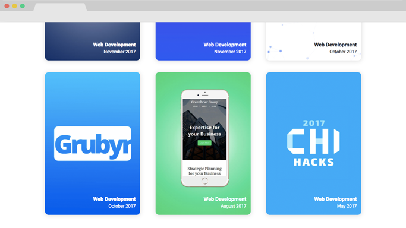

Building my Personal Website
I wanted a place to showcase my websites, so I registered the domain evaneckels.com, and got to work on my portfolio site.
On my site, I wanted a section for case studies on all of the sites I have created. These would walk the reader through my design process for each site I have worked on. Along with the case studies, I added a blog section to my site. A place for me to talk about web design, web development, and anything else Computer Science related.
Building the Header
I found the header of my site to be the hardest to complete. I wanted to give it a minimal feel, but it felt too plain without any color. I went through so many different layouts and designs for the header, but eventually settled on a design. I created a little greeting with my name in a large ornate serif font, and then got to work on the pulsing circle to add some color to my site.
I centered the pulsing circle and the text to the center of the page, hoping to draw attention to the center of the page immediately.
The bubble was extremely hard to develop in terms of technicality. It was by far my most intricate element on my site with the complicated keyframing. The circle started as blue in the center and then faded to a light green on the edges. The circle had a cycle of about 5 seconds, where it would expand, contract, and repeat forever.
The hardest part was keeping it somewhat viewable on mobile. I ended up finding a way to align the center of the bubble to the left edge of mobile screens, which actually created a pretty cool effect.
Design and Typography
Most portfolios take a minimalistic design to make sure that the sites design/theme does not distract the user from the important part of the site: the projects. I followed this popular practice, and chose a white theme with accents of gray to help make sure that the projects were in the spotlight.
I used gray text for the paragraph, and then a charcoal color for the headers. Not exactly black, but very close. The charcoal color is a little better on the eyes than pure black text on the bold headers.
The typeface I chose was very basic too. I used Italicized Playfair Display for displaying my name in the header, but other than that, all the rest of the text was Roboto. I felt Roboto was a good choice because it is a versatile font and goes well with the minimalist design. I used three different weights, 400, 500, and 700 for the body, subheadings, and headings respectively.
Creating the Cards
Next on my list was the grid section for all of my case studies. I wanted to give the user a preview of what each project was, without flooding the user with too much content.
So my solution was to use a grid system with a preview of each of my projects, giving the cards a rounded and taller feel. This allowed me to display text on the card without having to worry about the contrast and readability of the text.
I fit the different cards with the theme of each project, so they have vastly different color palettes. It allowed the projects to stand out and gave them more definition from each other. This practice gives the user to get a little more of a feel for the project before they click on it.
Creating the Case Study Template
I needed a reusable template to use for the case studies for the different projects, so I created a template system that was based solely on HTML tags, so it was scaleable and all the parts harmoniously fit together no matter the order of the elements.
I created a reusable section where the image hovers to the side of the text, allowing for easy annotation of the image. I also rendered the screenshots in Photoshop and added a browser vector purely for decoration.
The template consisted of two sizes for headers, body text, block quotes, images, captions, unordered and ordered lists. I wanted to make sure I styled elements for every possible situation, hopefully leading to some time saved down the road.
I made sure to keep the styling for the header and the link colors open so that project could have its own color scheme.
Choosing the Animations
I wanted to add animations to my site without being too obnoxious, so I went for a lot of fade up animations. It is a great effect because especially with images and cards it has that very natural feel to it as it comes from the bottom of the page when you scroll. I applied an Ease Out Quart easing function to the effects to give it a more fluid feel. I played around with the timing, as you could probably see with the projects, they come in from the bottom of the page in a staggered fashion.
Conclusion
Building this site was definitely an uphill battle because I needed to make sure it was scaleable and it took a lot longer than most of my other projects. I had to put a lot of thought into the development of my site because I had to plan for future cases where I may run into problems with my styling or structure, rather than only having to plan for one possible scenario with most of my past projects. I found myself using more styling like max-width or max-height to limit images or text boxes, because who knows, maybe at some point I will be uploading 1:10 aspect ratio images or writing 2 paragraph captions. Building this site definitely showed me why developers worry a lot about possible future use cases. You never know exactly how you will use the site down the road, and by closing loose ends you can save yourself lots of time by solving possible problems earlier.